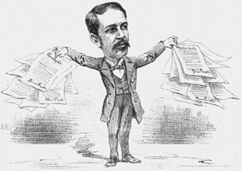
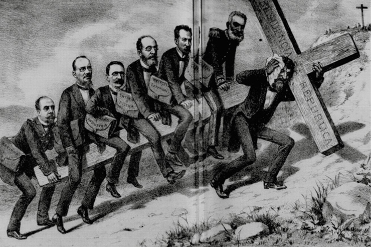

Revista Illustrada/Biblioteca Nacional, Rio de Janeiro
A Proclamação da República, em 15 de novembro de 1889, implantou um novo regime político no Brasil, fundamentado em eleições regulares para a composição dos poderes Legislativo e Executivo, consagrando, assim, a teoria iluminista da divisão dos três poderes. Em termos econômicos, manteve o polo nacional na região Centro-Sul – já consolidado no período imperial –, devido ao avanço da agroexportação do café.
Ao mesmo tempo, houve um rearranjo de forças políticas que imprimiu características peculiares ao federalismo brasileiro. Tal como alude a charge ao representar os grupos políticos que estiveram envolvidos na formação da República brasileira – e disputavam o poder –, participando da conformação da Constituição de 1891, a primeira do período republicano.
- Em termos políticos, quais são os principais desafios do nosso regime republicano atual?
- Por meio de quais mecanismos os poderes Executivo e Legislativo se relacionam no atual cenário político nacional?
Neste capítulo serão abordadas as habilidades EM13CHS103 , EM13CHS602 , EM13CHS603 .
A República brasileira
A chamada Primeira República brasileira foi motivo de muitas disputas ideológicas. Em seu tempo, foi vista como um momento histórico inédito do país, que inaugurava um novo regime político, com base na divisão dos três poderes, e um novo sistema administrativo, que implantava as coordenadas para o exercício da cidadania. Mas, devido à permanência de certos traços sociais e políticos, esse período também já foi chamado de República Velha e República do Café com Leite: ambas as expressões, de caráter pejorativo, foram construídas no Governo Vargas (1930-1945), a fim de destacar as rupturas entre um “Brasil arcaico e passado” e um “Brasil moderno em construção”. As duas denominações estariam ligadas à ideia de um Brasil rural que ainda mantinha vestígios do seu passado colonial e imperial, assim como os vícios políticos das trocas de favores entre as elites políticas, particularmente as de São Paulo e Minas Gerais.
Há, também, autores que trabalharam com a ideia de uma República Oligárquica para expressar a contradição de um sistema político que, teoricamente, era baseado no sufrágio universal e na autonomia dos três poderes, enquanto, na realidade, os comandos políticos estavam nas mãos de uma elite econômica ligada aos tradicionais setores agroexportadores.
Atualmente, historiadores adotam a expressão Primeira República, uma vez que esse termo permite uma análise de longa duração sobre a história do Brasil, com a vantagem de evitar juízos de valor. Assim, a chamada Primeira República vai de 1889, ano da Proclamação da República, a 1930, quando houve a tomada de poder por Getúlio Vargas.
Uma sociedade em transformação
O Brasil começou a realizar censos demográficos em 1870, quando tinha em torno de 10 milhões de habitantes. No começo do período republicano, em 1890, a população do país era de, aproximadamente, 14 milhões de pessoas, cujo crescimento era de 2,5% ao ano, em média. Ao longo da década de 1890, a população rural diminuiu cerca de 2%, enquanto a urbana aumentou quase 7%.
Essas oscilações demográficas foram acompanhadas por uma série de fatores históricos, entre eles o aumento dos incentivos à imigração europeia para o abastecimento de mão de obra na crescente lavoura do café e nos setores urbanos que estavam em franca expansão. A Primeira República foi o período de maior entrada de imigrantes no país, entre 1889 e 1930, com mais de 3,5 milhões de estrangeiros, cifra que alcança 65% do total dos imigrados entre 1822 e 1965.
São Paulo foi a região que mais recebeu imigrantes, com 57% do total, devido à urbanização e à industrialização crescentes. No pós-Primeira Guerra Mundial, São Paulo, Rio de Janeiro e Rio Grande do Sul consolidaram-se como os principais polos de presença imigrante no Brasil, sendo 18%, 20% e 7% da população, respectivamente.
Quanto às condições étnicas, o Brasil recebeu contingentes variados, sendo preponderante a presença de povos do Mediterrâneo. Do total de imigrantes, 3,5 milhões, estima-se que foram 14% de espanhóis, 28% de portugueses, 35% de italianos e 4% de alemães.
Nesse contexto, ainda é preciso lembrar que a Proclamação da República seguiu o rastro da abolição da escravidão, que lançou à própria sorte cerca de 750 mil ex-escravizados sem quaisquer indenização e proteção estatal, ou seja, sem propor políticas de inclusão desses libertos na sociedade e na economia. Esse dado não pode ser subestimado, pois os libertos, que representavam cerca de 5% da população, atingiam um número 25 vezes maior se comparado aos 30 mil operários do maior polo industrial do país em 1901, a cidade de São Paulo. Em outras palavras, a libertação desse contingente não significou necessariamente mão de obra empregada, pois é sabido que essas pessoas não haviam tido acesso às condições de ensino, letramento ou mesmo treinamento técnico para lidar com as novas condições de trabalho impostas pela industrialização em andamento no país. Assim, o avanço da ordem capitalista ao longo da Primeira República acentuou os conflitos raciais em nosso país, com o surgimento de novas formas de discriminação étnica e preconceitos sociais.
Apesar desse cenário, no Hino da República, resultado de um concurso público promovido por Deodoro da Fonseca, houve um esforço oficial de apagar as marcas da escravidão da história do país, ignorando o caráter miscigenado da população brasileira. Publicado em janeiro de 1890, o hino afirma: “nós nem cremos que escravos outrora / Tenha havido em tão nobre País... ”.
República da Espada (1889-1894)
A instalação do governo republicano começou poucas horas depois da tomada do poder pelos militares, em 15 de novembro de 1889. No fim da tarde, um decreto já legitimava o novo governo: o marechal Deodoro da Fonseca assumiu provisoriamente o cargo de presidente da República até as eleições, agendadas para 21 de dezembro de 1889.
Deodoro da Fonseca tinha 64 anos de idade quando assumiu e uma vasta experiência militar, consagrada pela participação na Guerra do Paraguai (1865-1870), mas, apesar de ter sido governador da província do Rio Grande do Sul, ele carecia de habilidade. Junto estavam Benjamin Constant, professor da Escola Militar da Praia Vermelha e responsável pela articulação do golpe que levou à proclamação da República, e Rui Barbosa, que já tinha experiência como deputado e conhecia bem os trâmites em torno do Poder Executivo.
As disputas ideológicas iniciais foram tensas, pois as divergências internas nas Forças Armadas pressionavam o recém-instalado governo em direção à radicalização das pautas positivistas, isto é, ao reforço da presença do Exército nos assuntos políticos do país, manifestada na ideia da instalação de uma ditadura republicana com base em um Poder Executivo forte e moderador do Legislativo. A famosa expressão do jornalista e político Aristides Lobo, que se tornou Ministro do Interior, é exemplar desse espírito político:
“[...] a cor do Governo é puramente militar, e deverá ser assim. O fato foi deles [dos militares], deles só, porque a colaboração do movimento civil foi quase nula. O povo assistiu àquilo [a Proclamação da República] bestializado, atônito, surpreso, sem conhecer o que significava. Muitos acreditaram seriamente estar vendo uma parada”.
LOBO, Aristides apud PAULA, Edgar. Momentos Histéricos da República no Brasil . 1. ed. São Paulo: Editora Eliana, 2018. p. 12-3.
Governo de Deodoro da Fonseca (1889-1891)
Como vimos, o fim do ano de 1889 foi pautado por intensos debates a respeito do papel do Poder Executivo. Deodoro não se deixou levar pela ala mais radical dos militares e, nas eleições de 21 de dezembro de 1889, foi eleito indiretamente presidente do Brasil. O momento era decisivo, pois estava em andamento uma série de novidades.
Tratava-se de reelaborar, no plano simbólico, os códigos sociais e culturais que apagassem elementos do mundo monárquico e determinassem novos ritmos de vida pautados nos valores republicanos, como nomes de ruas, praças e rituais sociais, como o feriado cívico de 21 de abril que, desse momento em diante, passou a associar o ideal republicano brasileiro à Inconfidência Mineira.
O governo de Deodoro da Fonseca, de 1889 a 1891, foi responsável também pela elaboração da primeira Constituição republicana do país, promulgada em fevereiro de 1891, após dois anos de trabalhos legislativos. A Carta tinha como inspiração os valores positivistas franceses e o modelo político federalista estadunidense, e entre as suas novidades, estavam:
Décio Villares. Tiradentes , início do século XX. Óleo sobre tela, 62 cm x 50,40 cm. Museu Nacional de Belas Artes, Rio de Janeiro, Brasil. Décio Villares foi o autor da representação que associou a figura de Tiradentes à de um “Cristo cívico”. A pintura foi reproduzida nos panfletos distribuídos no primeiro feriado cívico criado pela República, o dia 21 de abril.
Gedley Belchior Braga/Projeto del Rei (CC BY-SA 3.0)/Museu Nacional de Belas Artes, Rio de Janeiro, Brasil
A implantação do sistema bicameral, formado pela Câmara dos Deputados e pelo Senado, tinha em vista criar dois níveis de representação política: aos deputados caberiam as legislações que dizem respeito aos cidadãos; já aos senadores, os assuntos relativos às Unidades Federativas. Essas novidades trouxeram maior autonomia fiscal aos estados e promoveram, gradativamente, novas bases regionais de comandos políticos.
Em termos econômicos, Rui Barbosa, ministro da Fazenda do governo de Deodoro da Fonseca, adotou uma série de medidas liberalizantes que colocaram em marcha o capitalismo no Brasil. A partir daquele momento, as pessoas passaram a ter liberdade para criar empresas ou companhias sem autorização do governo.
Mudanças como essa representaram uma enorme transformação em termos históricos, pois trataram de implantar no Brasil uma dinâmica burguesa pautada pelos empreendimentos das livres iniciativas individuais. Isso é ainda mais significativo se levarmos em consideração que o país havia convivido por quase quatro séculos com a escravidão e com os princípios aristocráticos de regulação da vida social em todas as suas esferas, do cotidiano à economia e política.
No entanto, o personalismo político de Deodoro da Fonseca e seu perfil autoritário o colocaram em conflito com o Congresso, que foi dissolvido por ele, e setores militares. Estes, diante do acirramento das crises econômicas e das tensões sociais, chegaram a ameaçar bombardear a capital em novembro de 1891. Esse episódio, conhecido como Primeira Revolta da Armada , colocou em lados opostos o Exército e a Marinha e foi uma das causas da renúncia de Deodoro da Fonseca no mesmo ano. O seu vice, Floriano Peixoto, assumiu a presidência.
No entanto, o governo de Deodoro da Fonseca, apesar das tensões políticas, da crise econômica e dos conflitos internos, marcou um momento decisivo na trajetória política do país por ter se proposto a dissolver os recursos administrativos monárquicos e iniciado a implantação das instituições republicanas, sobretudo, a Constituição de 1891.
Governo de Floriano Peixoto (1891-1894)
O governo de Floriano Peixoto foi marcado por diversas tensões sociais devido, principalmente, ao caráter autoritário do presidente. Floriano Peixoto também construiu sua reputação militar e política durante a Guerra do Paraguai e, assim como seu antecessor, logo que assumiu o Poder Executivo destituiu todos os governadores estaduais rivais e nomeou pessoas alinhadas ao seu governo para substituí-los.
Publicada em 1892, a charge de Agostini representa a recepção de Floriano Peixoto ao “Manifesto dos 13 generais”, contestando o autoritarismo do presidente, que agraciava alguns militares com promoções e mandava outros para a prisão.
Revista Illustrada/Biblioteca Nacional, Rio de Janeiro
Encarnando os ideais da ala positivista mais radical dos grupos militares, ele sintetizou os desejos políticos de setores mais conservadores da sociedade, decretando estado de sítio, deportando opositores políticos sem o devido processo legal e instaurando a censura quando lhe foi conveniente.
Na sociedade brasileira do final do século XIX, majoritariamente rural, somava-se mais um dado político, decisivo para a compreensão do regime republicano que se iniciava: a baixa densidade eleitoral do país. Ao se colocar em perspectiva a sequência dos dez presidentes eleitos pelas regras democráticas vigentes naquele momento, de Prudente de Morais, eleito em 1894, a Júlio Prestes, eleito em 1930, o número de eleitores oscilou entre 2% e 5% do total da população, algo em torno de 300 a 500 mil pessoas. A explicação para esses baixos índices de participação popular nas eleições está no fato de que, apesar de ser um novo regime, as condições de cidadania ainda eram bastante restritivas.
O presidente, durante seu mandato, teve de enfrentar Júlio de Castilhos, importante líder político do Rio Grande do Sul, cujos seguidores apoiavam seu projeto constitucional defensor de uma ditadura positivista. Como resultado dessas tensões, entre 1893 e 1895 ocorreu a Revolta Federalista , uma guerra civil que colocou em lados opostos os “chimangos” (ou “pica-paus”), apoiadores de Júlio de Castilhos que resistiram à ordem republicana em nome da centralização política local, e os “maragatos”, tropas federalistas apoiadas pelo Governo Federal, que ansiava pela unidade nacional.
Esse conflito foi marcado por reviravoltas e desgastou o governo de Floriano Peixoto, que recorreu aos auxílios financeiros e militares de Prudente de Morais, governador de São Paulo, para obter armas, munições e homens e, assim, pôr fim à guerra. Essa situação evidenciou uma grande contradição do governo paulista, pois, apesar de suas claras convicções republicanas, estava financiando o autoritarismo florianista, tendo em vista o apoio do Governo Federal nas eleições futuras.
Portanto, os conflitos da Revolta Federalista demonstraram como a ordem republicana não era uma unanimidade nacional, uma vez que questões administrativas e jurídicas próprias do federalismo ainda estavam em xeque naquele momento.
Essa revolta, porém, não seria a última que Floriano Peixoto enfrentaria. A partir de maio de 1893, o presidente também se viu em um conflito com a Marinha, em um evento que perdurou até o ano seguinte e ficou conhecido como a Segunda Revolta da Armada .
Liderados pelo almirante Custódio de Melo, algumas unidades da Marinha protestavam contra o autoritarismo do presidente e exigiam novas eleições. Os marinheiros tentaram contar com o apoio dos revoltosos gaúchos, mas o aporte financeiro e militar que o presidente havia angariado com o governador de São Paulo e também com o governo dos EUA foi decisivo para a repressão dos revoltosos. Assim, em uma clara demonstração de poder, Floriano Peixoto determinou a mudança do nome da capital de Santa Catarina, de Nossa Senhora do Desterro para Florianópolis, em alusão direta a seu próprio nome. Por atitudes como essa, ele ficou conhecido como “o Marechal de ferro”.
Mesmo com essa alcunha, o “Marechal de ferro” começava a mostrar corrosões em suas bases e, consequentemente, um desgaste político. Assim, nas eleições de 1894, saiu vencedor Prudente de Morais, o primeiro civil a assumir a Presidência da República no Brasil.
República dos governadores (1898-1930)
Tido como moderado, o governo de Prudente de Morais foi o responsável pela transição entre os governos republicanos militares e a chamada “política dos governadores”.
Prudente de Morais foi o primeiro presidente a buscar uma conciliação política em torno de questões urgentes, tais como o controle das finanças e a pacificação de tensões sociais. Assim, pôs fim à censura e ao estado de sítio, medidas que permitiam às forças militares assumirem o papel de policiamento da sociedade visando à repressão social. Esse perfil moderado fez seu governo viver pressionado pelas heranças autoritárias dos florianistas e pela elite cafeicultora, que pela primeira vez chegava ao Poder Executivo.
De D. Quixote, a charge associa o governo de Prudente de Morais ao martírio cristão da Semana Santa para demonstrar as dificuldades do presidente para lidar com o jogo de interesses de seu ministério.
Don Quixote/Biblioteca Nacional, Rio de Janeiro
Para satisfazer os primeiros, ele deixou a cargo do ministro da guerra, general Carlos Machado Bittencourt, o comando das tropas destinadas ao combate do arraial de Canudos. Em relação à economia, Prudente de Morais confiou a Campos Sales uma política de empréstimos financeiros internacionais que almejava a recuperação da economia nacional, medida que ficou conhecida como funding loan .
Dono de vasta experiência política, Manuel Ferraz de Campos Sales fez carreira representando a oligarquia cafeeira de São Paulo e sucedeu Prudente de Morais na Presidência do país, vencendo as eleições em 1898. A partir desse momento, os ritos eleitorais e a administração pública brasileira adquiriram nova dinâmica, orbitando em torno dos interesses das oligarquias paulista e mineira.
Tomando como referência o federalismo estadunidense, Campos Sales promoveu uma intepretação original desse sistema – que, em teoria, baseava-se na autonomia e independência das unidades federativas em busca do equilíbrio da união nacional – para pôr em prática a “política dos governadores”, também conhecida como “política dos estados”.
De modo a superar o centralismo político imperial, Campos Sales afirmava que os comandos da nação deveriam estar nos estados, sendo “a vontade deles, a vontade da nação”. Os militares, então, foram afastados dos círculos de poder para dar lugar aos representantes das oligarquias estaduais, sobretudo de São Paulo e Minas Gerais.
Assim, foi construído um grande acordo com as casas legislativas, de maneira que houvesse um realinhamento político entre municípios, estados e federação respaldado pelo controle da máquina eleitoral. O domínio desse instrumento político garantia o revezamento de paulistas e mineiros no Executivo por meio das vitórias nos três níveis da federação.
Os fundamentos econômicos desse arranjo político podem ser resumidos em dois pontos. O primeiro deles foi a transferência de cobrança de tributos aos estados, o que permitiu a estes ficarem com os impostos derivados das exportações, enquanto a União asseguraria aqueles devidos às importações. Com essa medida, mesmo com o aumento das receitas federais, a arrecadação dos estados chegou a subir cerca de 120% no final de 1890.
O segundo ponto foi a política econômica recessiva de Campos Sales, que estimulou a desvalorização cambial e favoreceu os setores exportadores, a exemplo daqueles ligados à atividade cafeeira. Nos primeiros anos de 1900, os cafeicultores paulistas, que recebiam 37 mil réis por saca de café, passaram a receber 53,2 mil réis, um acréscimo de 43%. E, como a produção aumentava rapidamente, a renda total do setor chegou a crescer em torno de 70% em cinco anos.
Nessas condições econômicas, os apoios recíprocos entre o Poder Executivo nacional e os estaduais podem ser resumidos em três aspectos:
Quanto às fraudes eleitorais, os procedimentos eram variados e recorrentes por vários motivos, a começar pelo fato de o voto não ser secreto.
Entre as fraudes mais comuns estava o “voto a bico de pena”, termo popular decorrente do fato de os mesários escolherem os governantes valendo-se dos nomes de eleitores mortos ou fictícios. A manipulação das mesas eleitorais também era algo comum e consistia em alterar o volume de cédulas recolhidas em determinada seção a fim de deturpar a contagem final dos votos. Em última instância, o controle do processo eleitoral ainda passaria pela “degola”, etapa que consistia em colocar o candidato eleito à prova da Comissão Verificadora dos Poderes. Dirigida pelo presidente da Câmara, essa comissão era capaz de solicitar certificados e documentações para constranger os eleitos e, quando necessário, evitar sua diplomação como representante eleito democraticamente.
Publicada na revista Careta , em 19 de fevereiro de 1927, em alusão ao voto de cabresto, a charge de Storni é acompanhada da seguinte legenda: “Ella – É o Zé Besta? Elle – Não, é o Zé Burro”.
Careta/Biblioteca Nacional, Rio de Janeiro
Em síntese, nota-se que, no nível regional, o processo eleitoral era comandado pelas elites econômicas locais, que mantinham seus currais eleitorais bem preservados, tal como era feito na época imperial. O constrangimento do eleitorado e a manutenção do voto de cabresto davam-se por meio da realização de festas públicas, casamentos, batizados, construções públicas ou mesmo doação de roupas e comidas. Assim, ações como essas tornavam as relações sociais mediadas por favores pessoais, gestos de benevolência que transformavam a política em uma troca de vantagens e benefícios.
Publicada na revista Careta , em 29 de agosto de 1925, a charge de Storni faz alusão aos “donos do poder”: os oligarcas de São Paulo e Minas. À esquerda e à direita, respectivamente, eles observam do alto do assento presidencial representantes de outras províncias.
Careta/Biblioteca Nacional, Rio de Janeiro
Ao final do processo eleitoral, o Poder Executivo, em sintonia com o Congresso, ainda mantinha instrumentos de seleção artificial para a composição do quadro político brasileiro, uma vez que era o próprio Congresso quem verificava a lisura de seu processo de composição.
O resultado dessa “política dos governadores” foi o protagonismo político de São Paulo e Minas Gerais no revezamento do Poder Executivo. As oligarquias de Pernambuco, Rio de Janeiro, Bahia e Rio Grande do Sul ficaram em segundo plano, orbitando ao redor dos interesses e estratégias das oligarquias centrais.
Os principais partidos políticos da época eram o Partido Republicano Paulista (PRP) e o Partido Republicano Mineiro (PRM), mesmo assim, ainda não havia partidos de envergadura nacional capazes de transcender as esferas e os interesses locais para oferecer um projeto comum a todo o país. Nesse sentido, uma vez que a condução da política nacional estava atrelada aos interesses oligárquicos locais, o historiador José Murilo de Carvalho levantou uma interessante discussão conceitual a respeito das permanências das condições políticas daquele momento. Para o historiador, seria necessário reconhecer as distinções entre “ mandonismo”, “coronelismo” e “clientelismo” , pois, apesar de serem termos afins, possuem diferentes extensões conceituais e políticas:
Como se pode notar, a classificação conceitual proposta pelo historiador é mais uma maneira de compreender os níveis de funcionamento da “política dos governadores” que se desenvolveu ao longo da Primeira República.
Há um último aspecto que alimentava as fraudes eleitorais que comprometiam a cidadania brasileira a ser destacado: a Constituição de 1891 não descrevia o direito à educação como um dever do Estado, somente fazia referência à necessidade de ser laica nos estabelecimentos públicos.
Esse jogo político baseado nas trocas de vantagens partidárias cruzava diferentes níveis da federação: de um lado, fazia dos Estados as grandes engrenagens dos rumos políticos e econômicos do país; de outro, associava a permanência no Poder Executivo à capacidade do governante de lidar com os interesses e o poder dos integrantes do Poder Legislativo. A isso o sociólogo Sérgio Abranches deu o nome de “presidencialismo de coalizão”, sendo esta uma marca da política brasileira que ainda persiste.
Leitura de documentos
O que ‘Game of Thrones’ pode ensinar sobre a política brasileira
No início, quem governa é Robert Baratheon, que liderou junto com as casas Stark e Arryn uma revolução para depor o rei Aerys 2º Targaryen. Mas a rainha Cersei Lannister orquestra a morte do marido e de seu principal conselheiro, Ned Stark, e assume o controle do reino quando seu filho Joffrey é coroado. Começa, então, a guerra pelo trono entre Lannisters, Starks e os irmãos Renly e Stannis Baratheon, enquanto Daenerys, a filha de Aerys 2º que vive em exílio, arregimenta forças para tomar o posto que considera seu por direito. O autor dos livros em que a série é baseada, o escritor americano George R.R. Martin, já disse que buscou inspiração em acontecimentos históricos, como a Guerra das Rosas, travada entre as famílias Lancaster e York pelo trono da Inglaterra no século 15.
Essa origem em fatos reais permite fazer o caminho inverso e espelhar na ficção o que se passa na política da vida real, em especial a do Brasil. Podemos não ter dragões, zumbis ou bruxas – ao menos não como na TV. Mas, do outro lado da tela, os clãs políticos e partidos disputam o poder. “ Game of Thrones lança uma luz sobre as reuniões secretas da política. Seria como publicar as conversas de WhatsApp de todos os poderosos”, diz o historiador Leandro Karnal, professor da Universidade Estadual de Campinas (Unicamp).
Para Karnal, um dos grandes atrativos da série é desnudar os bastidores da política e ajudar a entender que “o objetivo do poder é o próprio poder”. “Não se trata de uma questão moral nem de visar ao bem. Grupos não buscam o poder pelo clamor das massas, para produzir justiça social ou progresso. Querem o ‘trono’ para atingir objetivos pessoais, e usam dos recursos necessários para isso”, diz.
Karnal diz que o sucesso da série se deve em parte a uma crescente descrença popular nos políticos. “No mundo todo, cada vez menos pessoas acreditam na ideia de políticos sem manchas que buscam o poder pelo amor à pátria e à sociedade. Então, essa versão realista da política de Game of Thrones atrai bastante”, afirma.
Alianças para governar
Ao longo de Game of Thrones , o jogo político muda constantemente, conforme famílias aliadas se tornam rivais. Os Lannister eram, por exemplo, antigos aliados dos Targaryen enquanto eles governaram por várias gerações, mas, quando os ventos da revolução mudam, ajudam a derrubar Aerys 2º. A casa Frey está ao lado dos Stark quando a série começa. Mas Rob Stark, um dos pretendentes ao trono, descumpre o acordo de se casar com uma mulher da família. Os Freys matam então Rob, sua mulher e sua mãe, e firmam uma aliança com os Lannister.
“A dinâmica entre as casas de Game of Thrones é como o toma lá dá cá do Congresso brasileiro, onde as alianças mudam constantemente», diz o especialista em política internacional Lucas Leite, professor da Fundação Armando Alvares Penteado (Faap). Não basta um governo ser amado pelo povo, argumenta Leite, é preciso articular aliados para se sustentar. “Qualquer presidente, de FHC a Temer, teve de negociar cargos, ministérios ou recursos em troca de apoio para aprovar medidas. Faz parte do jogo político.”
Se os partidos são como os clãs de Game of Thrones , quais legendas corresponderiam às principais casas da série? Leite aceita entrar na brincadeira e arrisca alguns palpites. “O MDB seriam os Frey, uma família sem ideologia ou apreço pela estabilidade que age em nome de seus interesses acima de qualquer coisa. O PSDB poderia ser os Baratheon, uma casa tradicional e com força, mas em decadência e que briga entre si”, diz o professor da Faap. Os Lannister, uma casa orgulhosa e meio egoísta, fechada em si mesma e estrategista, se assemelha ao Democratas, diz Leite. “Mas talvez não exista um partido tão pragmático assim na política brasileira.” (...)
BARIFOUSE, Rafael. O que “Games of Thrones” pode ensinar sobre a política brasileira . © BBC (2019) Reproduced by permission .
A análise da série Game of Thrones demonstra como os eventos históricos de um passado distante podem estar relacionados com o tempo presente. A afirmação do professor da Faap, citada na reportagem, de que a série permite compreender o “toma lá da cá” do Congresso Nacional, indica a permanência de vícios políticos da Primeira República no Brasil Contemporâneo. Com base em seus estudos em sala de aula, faça uma pesquisa e descubra:
- se seria possível dizer que ainda existe clientelismo no jogo político brasileiro;
- quais seriam os critérios para a conquista de uma base aliada ao Poder Executivo no Poder Legislativo;
- quais foram as bases aliadas legislativas dos últimos três cargos presidenciais brasileiros.
1
Mackenzie 2014 “A partir de hoje, 15 de novembro de 1889, o Brasil entra em nova fase, pois pode-se considerar finda a Monarquia, passando o regime francamente democrático com todas as consequências da Liberdade”. Assim se referiu a manchete do jornal carioca Gazeta da Tarde, anunciando a Proclamação da República no Brasil. Pode-se dizer que tal ato
- reforçou as posições conservadoras dos positivistas brasileiros, o que facilitou a ascensão do exército, como liderança do movimento, e auxiliou na decretação de um Estado em bases religiosas e federalistas.
- resultou da conjugação de variados fatores, destacando as insatisfações de grupos militares, camadas médias urbanas e setores latifundiários com os rumos políticos e sociais do Império no Brasil.
- colocou fim à longa crise do Segundo Reinado, contribuindo para a emergência do populismo enquanto prática política manipuladora, voltada para a satisfação dos anseios de camadas trabalhadoras urbanas.
- rompeu com a legalidade da sucessão ao trono, uma vez que impediu a ascensão da princesa Isabel, como governante, causando, por sua vez, revoltas populares por todo o país.
- corroborou a busca pela modernização política do Brasil e mostrou-se decisivo para a elaboração de políticas governamentais de inserção dos ex-escravos no mercado de trabalho livre.
2
Fuvest-SP Em um balanço sobre a Primeira República no Brasil, Júlio de Mesquita Filho escreveu:
“... a política se orienta não mais pela vontade popular livremente manifesta, mas pelos caprichos de um número limitado de indivíduos sob cuja proteção se acolhem todos quantos pretendem um lugar nas assembleias estaduais e federais”.
A crise nacional, 1925.
De acordo com o texto, o autor
- critica a autonomia excessiva do poder legislativo.
- propõe limites ao federalismo.
- defende o regime parlamentarista.
- critica o poder oligárquico.
- defende a supremacia política do sul do país.
3
Unesp 2016 Entre os mecanismos que sustentavam o regime político da Primeira República brasileira, pode-se citar
- a Constituição, que restringia aos chamados homens bons o acesso aos principais postos dos poderes executivo e legislativo.
- a política de compromissos, que vinculava os sindicatos de trabalhadores urbanos ao Ministério do Trabalho.
- a política do café com leite, que proibia as candidaturas eleitorais de representantes dos estados do Sul e Nordeste.
- a política dos governadores, que articulava a ação do governo federal aos interesses das oligarquias locais.
- a reforma política, que eliminou o voto censitário e instituiu o sufrágio universal nas eleições parlamentares.
4
ESPM-SP 2014 Além de ser inútil, votar era muito perigoso. Desde o império, as eleições na capital eram marcadas pela presença dos capoeiras, contratados pelos candidatos para garantir os resultados.
José Murilo de Carvalho, in Carlos Guilherme Mota. História do Brasil: Uma interpretação
No Brasil a Primeira República foi, por excelência, uma república de “coronéis”, traço dominante da cultura política daquela época. Quanto ao coronelismo e às eleições praticadas na Primeira República, é correto afirmar que:
- a instituição do voto secreto pela Constituição de 1891 contribuiu para a moralização das eleições;
- o coronelismo, fenômeno típico da urbanização, contribuiu para o afastamento dos grandes oligarcas do processo eleitoral;
- a mudança do império para a república produziu uma ruptura completa quanto aos procedimentos eleitorais, com a supressão das fraudes;
- as eleições continuaram sendo turbulentas, a fraude era comum e se o candidato eleito fosse da oposição era “degolado”, ou seja, não era diplomado;
- ocorriam fraudes, a ação de jagunços era frequente, porém com a criação da Comissão Verificadora de Poderes, em 1900, o processo eleitoral tornou-se limpo e transparente.
5
PUC-Campinas 2016 A vinda de imigrantes europeus ao Brasil favoreceria, segundo as autoridades governamentais da época, o branqueamento da população, evitando um processo de mestiçagem que, até então, tinha a negritude como um forte componente. Além dessa “consequência”, a imigração era aclamada por parte da elite, pois:
- segundo os defensores de políticas eugênicas, a sociedade brasileira possuía “males de origem” agravados pelo meio tropical, que poderiam ser amenizados com a vinda de uma população mais educada, limpa e disciplinada.
- de acordo com o pensamento positivista, a modernização social e econômica do Brasil dependia do nível de ilustração e participação política de seu povo, sendo papel dos imigrantes fundar escolas, atender os trabalhadores humildes e ocupar cargos administrativos.
- a situação econômica, com a crise da escravidão, exigia o abandono da agricultura e o direcionamento dos investimentos ao meio industrial, sendo a mão de obra europeia, especializada, indispensável ao bom funcionamento das fábricas.
- conforme as demandas do regime republicano, manter o trabalho escravo significaria abdicar da ampliação do mercado consumidor e postergar o fim do tráfico negreiro, tipo de comércio que há muitas décadas onerava os cofres dos Estados envolvidos.
- a expansão cafeeira demonstrara que o trabalho assalariado resultava em maior lucro para os produtores, porque os trabalhadores europeus eram mais dedicados, responsáveis por sua subsistência e dominavam a técnica exigida nesse tipo de produção.
Texto para as questões 6 e 7.
É certo que a República vai torta;
Ninguém nega a duríssima verdade.
Da pátria o seio a corrupção invade
E a lei, de há muito tempo, é letra morta.
[...]
Os motivos do mal não são mistério:
É que a gentinha que governa agora
É o rebotalho que sobrou do Império.
Bastos Tigre, apud Elias Thomé Saliba. Raízes do riso . São Paulo: Cia. das Letras, 2002. p. 97-98.
6
Identifique dois fatores históricos que legitimem os versos da primeira estrofe.
7
Esclareça o verso “é o rebotalho que sobrou do Império”, justificando seus argumentos com fundamentos históricos.
8
Observe a bandeira abaixo, elaborada em 1889 por Rui Barbosa, que teve como inspiração o pavilhão estadunidense.
Sitenl [CC BY-SA 2.5]
O projeto da bandeira para o Brasil republicano pode ser entendido como
- o desejo de implantação dos ideais pan-americanos, os quais marcaram setores políticos brasileiros interessados em aderir diplomaticamente aos Estados Unidos da América.
- a expressão dos ideais iluministas, como o federalismo e a divisão dos três poderes, implantados pelos Estados Unidos da América após sua independência.
- a demonstração de adesão aos ideais positivistas de ordem e progresso que animaram os militares envolvidos na Proclamação da República brasileira.
- uma louvação à nação estadunidense, devido aos auxílios prestados no processo de proclamação da República.
- a concretização dos valores liberais, tendo como referência o padrão do pavilhão nacional francês.
9
Com razão dizia um jornalista em 1915 que todos sabiam que “o exercício da soberania popular é uma fantasia e ninguém a toma a sério”.
CARVALHO, José Murilo de. Cidadania no Brasil. O longo caminho . 3. ed. Rio de Janeiro: Civilização Brasileira, 2002. p.42.
Ao se referir aos processos eleitorais da Primeira República, a citação permite afirmar que
- devido à existência do voto descoberto, as fraudes eleitorais inviabilizaram a legitimidade da representação política.
- o “exercício da soberania” seria uma fantasia devido à baixa participação popular nos pleitos, uma vez que o voto era facultativo.
- a Constituição promulgada em 1891 legislou sobre o voto secreto permitido aos homens alfabetizados maiores de 21 anos, exceto aos clérigos e militares.
- diante das condições de aliciamento eleitoral, as pressões tenentistas levaram a uma intensa reforma eleitoral em 1916 que instituiu uma Justiça Eleitoral de fato.
- a soberania popular é considerada uma “fantasia” por causa do autoritarismo imposto pelos tenentistas durante o regime, o que inviabilizou a realização de pleitos eleitorais.
Consolidando saberes
1
UFSC 2017
– A República está proclamada.
– Já há governo?
– Penso que já; mas diga-me V. Exa.: ouviu alguém acusar-me jamais de atacar o governo? Ninguém. Entretanto... Uma fatalidade! Venha em meu socorro, Excelentíssimo. Ajude-me a sair deste embaraço. A tabuleta está pronta, o nome todo pintado. – “Confeitaria do Império”, a tinta é viva e bonita. O pintor teima em que lhe pague o trabalho, para então fazer outro. Eu, se a obra não estivesse acabada, mudava de título, por mais que me custasse, mas hei de perder o dinheiro que gastei? V. Exa. crê que, se ficar “Império”, venham quebrar-me as vidraças?
– Isso não sei.
– Realmente, não há motivo; é o nome da casa, nome de trinta anos, ninguém a conhece de outro modo...
– Mas pode pôr “Confeitaria da República”...
– Lembrou-me isso, em caminho, mas também me lembrou que, se daqui a um ou dois meses, houver nova reviravolta, fico no ponto em que estou hoje, e perco outra vez o dinheiro.
ASSIS, Machado de. Esaú e Jacó. 12. ed. São Paulo: Ática, 1999, p. 114.
Sobre o advento da República no Brasil, é correto afirmar que:
.01
para os positivistas brasileiros, que adotaram o lema “ordem e progresso” para a nova República, a “nação” precisava ser controlada por homens capazes de manter a ordenação da sociedade de modo racional e científico e compor um Estado forte e intervencionista.
.02
entre as primeiras ações do governo provisório estavam a adoção do federalismo, que transformou as antigas províncias em estados da Federação; a desvinculação entre Igreja e Estado; a legalização de milhares de estrangeiros e a instituição do casamento e do registro civil.
.04
a mudança do nome da cidade de Nossa Senhora do Desterro para Florianópolis aconteceu após eventos de resistência ao governo de Floriano Peixoto, ocorridos na capital de Santa Catarina, como uma demonstração de força política do presidente.
.08
a população do Rio de Janeiro, mesmo sendo surpreendida pelo movimento dos militares, já estava imbuída dos ideais republicanos e saiu às ruas em mobilização de apoio ao movimento após a oficialização da proclamação da República.
.16
atendendo a aspirações do Movimento Republicano e com inspiração na Constituição liberal estadunidense, foi adotado o voto universal com restrições apenas aos analfabetos.
.32
durante o primeiro governo republicano, o Brasil enfrentou grandes problemas econômicos com surtos inflacionários e um descontrolado mercado de compra e venda de ações que levaram a economia ao colapso. A política econômica adotada na época ficou conhecida como “Encilhamento”.
Soma
2
ESPM-SP O coronelismo foi um dos mais característicos fenômenos sociais e políticos da República Velha. Suas raízes se encontram no Império, mas sua forma mais genuína foi fruto do entrelaçamento de modernas instituições – como o voto universal – com as arcaicas estruturas da grande propriedade rural e seus interesses particulares.
Leonel Itaussu. História do Brasil
Aponte a alternativa que apresente atributos do coronelismo:
- o poder político local ligado a um sistema econômico agroindustrial e urbano;
- o poder político centralizado e o desenvolvimento urbano e industrial;
- o poder político local ligado a uma economia essencialmente agroexportadora;
- o poder político centralizado e uma economia essencialmente agroexportadora;
- o poder político militarizado e um sistema econômico agroindustrial e urbano.
3
PUC-Campinas 2017 Brás Cubas busca articular a política de domínio paternalista, sob fogo cerrado nos anos 1870, com aspectos da onda de ideias cientificistas europeias do tempo – especialmente no que tange ao darwinismo social como forma de explicar a origem e a reprodução das desigualdades sociais.
CHALHOUB, Sidney. Machado de Assis Historiador . São Paulo: Companhia das Letras, 2003, p. 96
A tendência ao domínio paternalista pode ser encontrada na postura dos chamados coronéis, mandatários locais que exerceram amplos poderes em muitas regiões do Brasil. A respeito do coronelismo, é correto afirmar que
- a origem desse fenômeno remonta à criação da Guarda Nacional, logo após a Independência do Brasil, quando foram distribuídas patentes militares que foram passadas de geração a geração.
- esse fenômeno é predominantemente rural, meio onde grassa o analfabetismo, a ação de organizações de resistência por parte dos trabalhadores e a ausência do poder público, em oposição ao que ocorre no meio urbano.
- a permanência, ao longo da história do Brasil, de práticas inicialmente associadas ao período da república oligárquica demonstra a duradoura eficácia política desse tipo de relação.
- esse sistema de poder foi oficialmente combatido por alguns governos, em especial o de Getúlio Vargas, que procurou desarticular politicamente os latifundiários, submetendo-os aos interventores estaduais e municipais.
- a definição desse conceito é equivalente à de clientelismo, troca de favores envolvendo proteção e prestígio político, presente também na relação entre suseranos e vassalos.
4
PUC-Campinas 2017 A República trouxe recusas superficiais ao Império, ficando a expansão republicana do poder e dos direitos reduzida, no máximo, a farsas, a começar do método fraudador das “eleições a bico de pena”.
FREITAS, Jânio de. Folha de S. Paulo , 30/04/2017
A problemática descrita no texto pode ser associada, no Brasil,
- ao federalismo, que rejeitado pela oligarquia agrária, possibilitava constantes intervenções da União sobre o sistema eleitoral dos estados, para garantir o poder local dos coronéis.
- ao voto aberto, o qual facilitava o uso do poder coercitivo dos grandes proprietários para garantir a manutenção dos seus interesses articulados com os do poder governamental.
- às forças armadas, as quais desejavam conceder maior participação política às camadas mais baixas da população e dos analfabetos para favorecer a instalação de uma República.
- ao sufrágio universal, o qual garantia a participação política àqueles que possuíssem uma renda anual equivalente ou superior à da produção de cento e cinquenta arrobas de ouro.
- ao autoritarismo governamental, o qual possibilitava a continuidade do poder nas mãos daqueles eleitos diretamente pelo povo de acordo com as normas eleitorais herdadas do Império.
5
Unisc-RS 2015
O clientelismo é uma das características históricas da política brasileira. Pode ser definido como uma relação de troca de favores entre agentes políticos, agentes econômicos e cidadãos. O historiador José Murilo de Carvalho define o clientelismo como um tipo de relação que “envolve a concessão de benefícios públicos, na forma de empregos, benefícios fiscais, isenções, em troca de apoio político, sobretudo na forma de voto”.
(CARVALHO, J.M. Mandonismo, coronelismo, clientelismo: uma discussão conceitual. Dados, v. 40, n. 2, 1997, p. 229-250.)
Com base na citação acima, indique a alternativa que não constitui uma prática de clientelismo.
- Um candidato a cargo político faz entrega de “ranchos” em bairros pobres em troca de votos.
- No início do século XX, era comum o coronelismo, sistema em que o “coronel” local, por comandar um lote de “votos a cabresto”, era o intermediário dos serviços públicos prestados pelo poder central aos cidadãos.
- Um empresário promete apoio da empresa a um candidato a presidente em troca de isenção de impostos na nova unidade da empresa.
- Cada beneficiário do programa Bolsa Família retira, usualmente, o benefício no banco, utilizando seu cartão bancário, sem necessidade do apoio ou intervenção de algum agente político.
- Os donos de uma empresa de radiodifusão promovem uma cobertura jornalística amistosa acerca das ações do governo após terem obtido redução de impostos para as emissoras de comunicação
6
PUC-Campinas 2015
A partir da segunda metade do século XIX as ideias de Augusto Comte permearam as mentalidades de muitos mestres e estudantes militares, políticos, escritores (...). Vários brasileiros adotaram, ou melhor, se converteram ao positivismo (...). Tais influências estimularam movimentos de caráter republicano e abolicionista, em oposição à monarquia e ao escravismo dominante no Brasil. A Proclamação da República (...) foi o resultado “natural” desse movimento.
VALENTIM, Oséias Faustino. O Brasil e o Positivismo . Rio de Janeiro: Publit, 2010.
O conhecimento histórico permite afirmar que os vários brasileiros que adotaram as ideias da filosofia a que o texto se refere defendiam
- a organização da sociedade em pequenos grupos sob regime de autogestão, o que permitiria à comunidade elaborar suas próprias normas de comportamento e a eliminação do Estado.
- o projeto republicano que tinha à frente profissionais liberais e pequenos artesãos e propunha uma forma de governo democrático que honrasse os princípios da Revolução Francesa.
- a aliança entre o Estado e a Igreja, uma vez que ajudaria a evitar as convulsões sociais que as elites tanto temiam e contribuiria para integrar o país no universo republicano.
- uma República ditatorial, centralizada e forte, cujo poder deveria ser exercido pelos militares, os únicos capazes de corrigir os vícios da organização política e social do país.
- a consolidação de uma república que possibilitasse a descentralização política como forma de garantir a ampliação do poder da classe média e do fortalecimento do operariado.